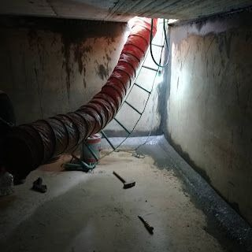

ليش ريحة مويتك تغيرت؟ السبب غالبًا في خزانك
تفتح الحنفية وتلاحظ إن الموية فيها ريحة ما كانت موجودة قبل. وهالشي يقلق أي بيت في الرياض، لأن نفس الموية تشربها وتطبخ فيها وتتحمم فيها. لكن تغير رائحة الماء بالرياض أسبابه معروفة في أغلب الحالات، وأكثرها يرجع للخزان.
هالدليل عن الريحة بس. بنمشي على اسباب رائحة الماء الكريهة بالرياض وحدة وحدة، ونشرح كيف تفرق بين ريحة طبيعية مثل الكلور وريحة تدل على مشكلة.
وبنوضح ليش رائحة الماء من الخزان بالرياض هي السبب الأكثر شيوعًا، ووش الخطوات اللي تقدر تسويها بنفسك قبل ما تتصل بأي أحد.
ليش الريحة أكثر علامة تقلق أصحاب البيوت؟
الأنف يلتقط التغير أحيانًا قبل ما يبان بالعين بأيام، فيكون تغير رائحة الماء بالرياض في أغلب البيوت أول شي ينبهك إن فيه خلل في الخزان أو المواسير.
والمشكلة إن كثير من الناس يتعودون على الريحة مع الأيام، أو يغطونها بفلتر أو بغليان الموية، بدل ما يعرفون اسباب رائحة الماء الكريهة بالرياض ويتعاملون معها من أصلها.
الأسباب المرتبطة بالخزان تحديدًا
الخزان مظلم ودافي، والموية فيه ساكنة أغلب الوقت، وهالظروف تناسب الطحالب والبكتيريا. ورائحة الماء من الخزان بالرياض هي أكثر سبب نشوفه في بيوت المدينة.
تراكم الطحالب
الطحالب تنمو لما يوصل ضوء للموية من غطاء غير محكم أو خزان بلاستيك شفاف جزئيًا، ومع الحرارة تتكاثر بسرعة. وريحتها ترابية أو عشبية، وهي من أشهر اسباب رائحة الماء الكريهة بالرياض في الخزانات العلوية اللي فوق السطوح.
وغالبًا تلاحظ معها لون مخضر خفيف، فتكون الطحالب من اسباب تغير لون الماء بالرياض والريحة في نفس الوقت.
الرواسب العضوية في القاع
مع الشهور، يتجمع في قاع الخزان طين وغبار وبقايا حشرات أو أوراق دخلت من الفتحات. هالمواد العضوية تتحلل ببطء، والتحلل يطلع غازات وريحة عفنة. وهذا يفسر ليش تغير رائحة الماء بالرياض يظهر أحيانًا فجأة في خزان ما اشتكيت منه سنين: الرواسب وصلت لكمية صارت تأثر.
ركود الموية لفترة طويلة
لما تسافر أسابيع، أو يكون الخزان أكبر من احتياج البيت، تبقى الموية راكدة فترة طويلة، ويقل فيها الكلور تدريجيًا لين تفقد حمايتها ضد البكتيريا. فأول ما ترجع وتفتح الحنفية تحس برائحة الماء من الخزان بالرياض.
والركود يفسر كثير من اسباب رائحة الماء الكريهة بالرياض في الاستراحات والملاحق اللي ما تُستخدم إلا في المواسم.
الغطاء والفتحات
الغطاء المكسور أو غير المحكم يسمح بدخول الغبار والحشرات وأحيانًا حيوانات صغيرة. ولو سقط حيوان صغير في الخزان، يصير تغير رائحة الماء بالرياض قوي وكريه جدًا، وهنا توقف الشرب من الموية فورًا.
- طحالب تنمو بسبب الضوء والحرارة
- رواسب عضوية متحللة في القاع
- موية راكدة فقدت الكلور
- غطاء غير محكم يسمح بدخول ملوثات
- عزل داخلي متضرر يحبس الموية خلفه
وأي سبب من هذي ممكن يجي معه تغير بسيط في اللون، وهنا تفيدك معرفة اسباب تغير لون الماء بالرياض في تحديد المصدر.
محتاج تنظيف احترافي؟
ريحة مويتك تغيرت؟ فريقنا يفحص الخزان ويحدد مصدر الريحة وينظفه ويعقمه من الجذور
لما يتغير اللون مع الريحة
أحيانًا يجي مع الريحة تغير في اللون، واللون هنا يدلك على المصدر. ولو عرفت اسباب تغير لون الماء بالرياض وقارنتها بنوع الريحة اللي تشمها، يصير التشخيص أسهل بكثير.
| اللون مع الريحة | السبب المحتمل |
|---|---|
| مخضر مع ريحة ترابية | طحالب في الخزان |
| بني أو أصفر مع ريحة معدنية | صدأ في المواسير أو رواسب حديد |
| رمادي أو أسود مع ريحة عفنة | رواسب عضوية متحللة أو غشاء بكتيري |
| أبيض عكر بدون ريحة يصفى بسرعة | فقاعات هواء غالبًا ما تضر |
والبياض اللي يصفى من تحت لفوق خلال دقيقة غالبًا مجرد هواء، وما يدخل ضمن اسباب تغير لون الماء بالرياض المقلقة.
واللون البني مع ريحة معدنية يرجع غالبًا للمواسير القديمة، وهو من اسباب تغير لون الماء بالرياض اللي ممكن ما يكون للخزان فيها دخل.
أما اللون الداكن مع ريحة عفنة فيحتاج فحص سريع، لأنك هنا قدام تغير رائحة الماء بالرياض وتغير اللون مع بعض، والسبب غالبًا رواسب أو غشاء بكتيري داخل الخزان.
ولا تعتمد على اللون لحاله، لأن الموية ممكن تبان صافية تمامًا وفيها ريحة تحتاج تدخل. استخدم اسباب تغير لون الماء بالرياض كدليل مساعد تقرأه مع الريحة.
أسباب ثانية غير الخزان ممكن تشتبه فيها بالغلط
فيه ناس ينظفون الخزان كامل وتبقى الريحة، لأن المصدر كان في مكان ثاني. فقبل ما تحكم، راجع اسباب رائحة الماء الكريهة بالرياض اللي ممكن تكون خارج الخزان.
الشبكة العامة نفسها
أحيانًا تصير أعمال صيانة في الشبكة، أو تُعالج الموية بكمية كلور أعلى من المعتاد مؤقتًا، فتلاحظ ريحة كلور واضحة في كل الحي. وهذا النوع من تغير رائحة الماء بالرياض مؤقت غالبًا، ويختفي خلال أيام.
وبعد انقطاع الموية ورجوعها، ممكن تطلع الموية عكرة لفترة قصيرة بسبب تحرك الرواسب في المواسير، وهالعكارة من اسباب تغير لون الماء بالرياض المؤقتة، وتصفى لحالها.
سخان الموية
لو كانت الريحة تشبه البيض الفاسد وتظهر في الموية الحارة بس، فالسبب غالبًا السخان مو الخزان. بعض السخانات فيها قضيب داخلي للحماية من التآكل، وممكن يتفاعل مع مكونات الموية ويطلع هالريحة، خصوصًا لو كان السخان ما يُستخدم فترة. وكثير من الناس يحسبونها من الخزان، مع إنها من اسباب رائحة الماء الكريهة بالرياض اللي حلها عند السخان.
وتقدر تتأكد بسهولة: لو الموية الباردة سليمة والحارة فيها الريحة، فتغير رائحة الماء بالرياض عندك جاي من السخان، والخزان ما له دخل.
المواسير القديمة
المواسير الحديد القديمة تصدأ من الداخل، وتعطي الموية ريحة معدنية ولون مائل للبني، خصوصًا أول ما تفتح الحنفية الصبح. ونشوف هالنوع من اسباب تغير لون الماء بالرياض كثير في البيوت القديمة.
ولو كانت الريحة واللون يختفون بعد ما تخلي الموية تجري دقيقة أو دقيقتين، فغالبًا المشكلة في المواسير مو في الخزان، وتقدر تشطب الخزان من قائمة اسباب رائحة الماء الكريهة بالرياض في حالتك.
المصارف والسيفون
أحيانًا الريحة اللي تحسبها من الموية تكون طالعة من فتحة التصريف في المغسلة، خصوصًا لو كان السيفون ناشف أو فيه رواسب. فعبّي كاس موية وشمه بعيد عن المغسلة قبل ما تحكم إن عندك تغير رائحة الماء بالرياض فعلًا.
ولو استبعدت كل هذا، يبقى الاحتمال الأقوى رائحة الماء من الخزان بالرياض.
كيف تفرق بين ريحة الكلور الطبيعية وريحة التلوث الفعلية؟
ريحة الكلور الخفيفة في موية الشبكة شي طبيعي، لأن الكلور يُستخدم لتعقيم الموية وحمايتها في المواسير. والمشكلة إن بعض الناس يخافون منها ويحسبونها تلوث، وبعضهم بالعكس يتجاهل ريحة خطيرة ويحسبها كلور. فلازم تعرف تفرق بين الاثنين قبل ما تحكم على تغير رائحة الماء بالرياض في بيتك.
| المقارنة | ريحة الكلور الطبيعية | ريحة التلوث الفعلية |
|---|---|---|
| طبيعة الريحة | تشبه ريحة المسابح، حادة وخفيفة | عفنة، ترابية، بيض فاسد، أو مجاري |
| بعد ترك الموية مكشوفة | تخف خلال ساعات | تبقى أو تزيد |
| في كل الحي | غالبًا نعم بعد أعمال الشبكة | غالبًا في بيتك بس |
| مع تغير اللون | نادرًا | أحيانًا |
والاختبار العملي: عبّي كاس موية واتركه مكشوف في الثلاجة ساعات. ريحة الكلور تتبخر وتخف، أما الريحة اللي وراها اسباب رائحة الماء الكريهة بالرياض الحقيقية فغالبًا تبقى مثل ما هي أو تزيد.
وبالعكس، لو اختفت ريحة الكلور تمامًا من موية الخزان، فممكن الموية ركدت فترة طويلة، وهالركود غالبًا يسبق ظهور رائحة الماء من الخزان بالرياض.
وش يدلك عليه نوع الريحة؟
شم الموية في كاس وحاول توصف الريحة بدقة، لأن كل مصدر تقريبًا له ريحة تميزه.
ريحة بيض فاسد
تدل غالبًا على غازات كبريتية تطلعها بكتيريا تعيش في أماكن قليلة الأكسجين، مثل قاع خزان فيه رواسب أو سخان ما يُستخدم. ولو كانت موجودة في الموية الباردة كمان، فالقاع هو المشتبه الأول، وهي من اسباب رائحة الماء الكريهة بالرياض اللي تحتاج متابعة.
ريحة ترابية أو عشبية أو عفن
غالبًا من الطحالب أو الغشاء البكتيري على جدران الخزان، أو من رواسب متحللة. وهذي أكثر ريحة يوصفها الناس لما تكون عندهم رائحة الماء من الخزان بالرياض.
ريحة معدنية
تدل غالبًا على صدأ في المواسير أو الخزان المعدني، وكثير يجي معها لون بني، فتلقاها مع اسباب تغير لون الماء بالرياض اللي في الجدول فوق.
ريحة مجاري
هذي أخطر ريحة، لأنها ممكن تعني إن فيه تداخل بين موية الصرف وموية الشرب، خصوصًا في الخزانات الأرضية القريبة من خزانات الصرف. ولما يكون تغير رائحة الماء بالرياض بهالشكل، لازم توقف استخدام الموية فورًا.
ريحة وقود أو مواد كيميائية
نادرة لكنها خطيرة، وتدل على دخول مواد غريبة للخزان أو المواسير من مصدر قريب. وهنا كمان أوقف الاستخدام فورًا لين يتحدد المصدر.

خطوات أولية للتأكد من مصدر الريحة قبل ما تتصرف
قبل ما تتصل بأحد أو تبدأ تنظيف، جرّب هالخطوات. كلها تسويها بنفسك، وتعرف بعدها تقريبًا وين مصدر تغير رائحة الماء بالرياض في بيتك، فما تدفع على تنظيف ما تحتاجه.
- شم الموية في كاس بعيد عن المغسلة، عشان تستبعد ريحة التصريف.
- قارن بين الموية الباردة والحارة لتعرف إذا كان السخان هو السبب.
- خل الموية تجري دقيقتين وشوف إذا الريحة تخف، لتعرف إذا كانت المواسير السبب.
- اسأل جيرانك إذا عندهم نفس الريحة، لتعرف إذا كانت من الشبكة.
- افحص الخزان العلوي والأرضي: الغطاء، والريحة عند الفتحة، ولون الموية.
لو كانت الريحة في كل الحنفيات، باردة وحارة، ما تخف مع الجريان، وما عند جيرانك نفس الشي، فالاحتمال الأكبر هو رائحة الماء من الخزان بالرياض.
ولو شفت لون غريب في الخزان نفسه وأنت تفحصه، فالتشخيص صار أوضح، وارجع لجدول اسباب تغير لون الماء بالرياض فوق عشان تعرف وش يعني اللون.
ووثّق كل ملاحظة بالصور، لأنها تساعد المختص يفهم اسباب رائحة الماء الكريهة بالرياض في بيتك بسرعة أكبر.
متى تكون الريحة علامة خطر صحي فعلي؟
أغلب الروائح مزعجة أكثر منها خطيرة، لكن فيه حالات ما تحتمل الانتظار. وقبل ما تبحث في اسباب رائحة الماء الكريهة بالرياض بالتفصيل، تأكد إن حالتك مو منها:
⚠️ أوقف استخدام الموية للشرب والطبخ فورًا واستخدم موية معبأة لو كانت الريحة تشبه المجاري، أو ريحة وقود أو مواد كيميائية، أو لو ظهرت أعراض معوية على أكثر من شخص في البيت، أو لو لقيت حيوان أو جسم غريب داخل الخزان.
والريحة الترابية الخفيفة ما تستدعي الفزع، لكنها تعني إن الخزان يحتاج تنظيف وتعقيم قريب، ولو تركتها ممكن يزيد تغير رائحة الماء بالرياض مع الوقت.
وانتبه بشكل خاص لو كان في البيت أطفال صغار أو كبار سن أو أحد مناعته ضعيفة، لأنهم أكثر تأثرًا بأي تلوث. وفي هالبيوت تعامل مع الريحة ومع اسباب تغير لون الماء بالرياض بسرعة أكبر من العادة.
ولو كان عندك أي شك صحي، استشر طبيب، وتواصل مع شركة المياه الوطنية لو كانت المشكلة منتشرة في الحي.
كيف تتخلص من المشكلة من جذورها بدل الحلول المؤقتة؟
الحل يبدأ من الخزان نفسه: تفريغ كامل، وإزالة الرواسب والطحالب، وتعقيم بمواد آمنة على موية الشرب، وشطف نهائي، ثم فحص حالة العزل الداخلي والغطاء والفتحات. وهنا الأفضل تستعين بـشركة عزل خزانات بالرياض تنظف الخزان وتعقمه، وتكشف إذا كان فيه عزل متضرر يحبس موية راكدة خلفه، وتصلحه.
والسبب إن العزل المتشقق أو المنفصل يخلق فراغات تتجمع فيها موية ما تتجدد، وهذي الفراغات ممكن تكون مصدر رائحة الماء من الخزان بالرياض حتى بعد تنظيف الخزان، لأن التنظيف ما يوصلها.
والفريق المتخصص يحدد وش من اسباب رائحة الماء الكريهة بالرياض موجود عندك: رواسب، أو طحالب، أو عزل متضرر، أو غطاء غير محكم، ويعالج كل واحد بطريقته.
وبعد العلاج، إحكام الغطاء وتظليل الخزان العلوي والتنظيف الدوري يمنعون رجوع تغير رائحة الماء بالرياض مرة ثانية.
- تفريغ كامل وإزالة الرواسب والطحالب
- تعقيم بمواد آمنة وشطف نهائي
- فحص العزل الداخلي وإصلاح أي ضرر
- إحكام الغطاء وفتحات التهوية
- جدول تنظيف دوري يمنع تكرار المشكلة
ليش الحلول المؤقتة ما تنفع؟
بعض الناس يركبون فلتر ويحسبون إن المشكلة انحلت، أو يضيفون مواد تعقيم عشوائية للخزان المليان. الفلتر ممكن يخفف الريحة اللي توصل للحنفية، لكنه ما يشيل مصدرها، ويتعبى بسرعة لو كان الخزان متسخ. فيبقى تغير رائحة الماء بالرياض في الخزان، والفلتر يغطيه بس.
وإضافة مواد تعقيم بدون تنظيف ما يشيل الرواسب ولا الغشاء البكتيري على الجدران، وممكن تعطي الموية ريحة كيميائية قوية فوق الريحة الأصلية. وهكذا تتحول اسباب رائحة الماء الكريهة بالرياض من سبب واحد لسببين.
والغليان يقتل البكتيريا، لكنه ما يشيل الريحة ولا يغير اسباب تغير لون الماء بالرياض، وما يحل مشكلة الخزان نفسه.
صيف الرياض وتأثيره على ريحة الموية
الحرارة العالية في الصيف تسرّع نمو الطحالب والبكتيريا، خصوصًا في الخزانات العلوية المكشوفة للشمس. فكثير من الناس يلاحظون رائحة الماء من الخزان بالرياض أوضح في الصيف من الشتاء.
والموية الحارة في الخزان العلوي تفقد الكلور أسرع. فلو بتسوي شي واحد قبل الصيف، ظلّل الخزان العلوي ونظفه، عشان تتجنب تغير رائحة الماء بالرياض في أحر شهور السنة.
الخزان العلوي ولا الأرضي، أيهم يطلع ريحة أكثر؟
الخزان العلوي معرض للشمس والحرارة، فالطحالب تنمو فيه أسرع، والموية تسخن وتفقد الكلور بسرعة. فرائحة الماء من الخزان بالرياض في الخزانات العلوية تطلع غالبًا ترابية أو عشبية.
أما الخزان الأرضي فمظلم وبارد نسبيًا، لكنه أكبر والرواسب فيه تتجمع لسنين، وأحيانًا يكون قريب من خزان الصرف. وعشان كذا تميل اسباب رائحة الماء الكريهة بالرياض في الخزان الأرضي للعفن وريحة البيض الفاسد أكثر.
ولأن الموية تمر بالأرضي ثم العلوي، لازم تفحص الاثنين؛ لأن تنظيف واحد وترك الثاني يرجع تغير رائحة الماء بالرياض بعد أيام.
الخزانات البلاستيكية والريحة
الخزانات البلاستيكية الجديدة أحيانًا تعطي الموية ريحة بلاستيك خفيفة في أول أسابيع، وهذي غالبًا تخف مع الاستخدام والشطف. لكن لو كان الخزان من مادة غير مخصصة لموية الشرب، فالريحة ممكن تستمر، وتصير من اسباب رائحة الماء الكريهة بالرياض اللي تحتاج استبدال الخزان.
والخزانات البلاستيكية الفاتحة تسمح بمرور شوية ضوء، وهذا يشجع الطحالب ويغير لون الموية للأخضر. وهنا يكون نوع الخزان نفسه من اسباب تغير لون الماء بالرياض.
وتظليل الخزان البلاستيكي أو طلاؤه من برا بلون يمنع الضوء يحل جزء كبير من رائحة الماء من الخزان بالرياض في هالنوع.
كيف ترجع الموية لطبيعتها بعد سفر طويل؟
لما ترجع من سفر طويل، غالبًا بتلاحظ ريحة في الموية بسبب الركود. افتح كل الحنفيات وخلها تجري دقائق، عشان تطلع الموية الراكدة في المواسير. وهذي أول خطوة لما تواجه تغير رائحة الماء بالرياض بعد الغياب.
ولو استمرت الريحة بعد الجريان، فالمشكلة في الخزان نفسه، والأفضل تفرغه وتنظفه قبل ما تعتمد عليه للشرب. ولاحظ لون الموية وقت التفريغ، لأنه يكشف لك اسباب تغير لون الماء بالرياض اللي صارت أثناء غيابك.
وقبل أي سفر طويل، تأكد إن الغطاء محكم، وفكر في تقليل مستوى الموية في الخزان، عشان تقلل اسباب رائحة الماء الكريهة بالرياض المرتبطة بالركود.
لو الحي كامل يشتكي من نفس الريحة
لو لاحظت إن جيرانك كلهم يشتكون من نفس الريحة في نفس الوقت، فالاحتمال الأكبر إن المشكلة في الشبكة مو في خزانك. وفي هالحالة تغير رائحة الماء بالرياض يكون مؤقت غالبًا، وتقدر تتواصل مع شركة المياه الوطنية للاستفسار.
لكن انتبه إن موية الشبكة لو جات بريحة أو عكارة، بتتخزن في خزانك، وممكن تحتاج تنظيف الخزان بعد ما ترجع الشبكة لطبيعتها. يعني حتى لو كانت اسباب رائحة الماء الكريهة بالرياض من برا، أثرها ممكن يبقى في خزانك.
وبعد أعمال الشبكة، تابع لون الموية أيام، لأن الرواسب المتحركة من أكثر اسباب تغير لون الماء بالرياض اللي تصير بعد الصيانة.
ريحة الموية في المطبخ تحديدًا
أحيانًا تلاحظ الريحة في حنفية المطبخ بس، وهنا السبب غالبًا محلي: فلتر قديم تحت المغسلة ما تغير من فترة، أو رأس حنفية فيه رواسب، أو سيفون فيه بقايا أكل. فقبل ما تحكم على تغير رائحة الماء بالرياض في البيت كله، افحص المطبخ لحاله.
والفلتر القديم بالذات ممكن يصير مصدر للبكتيريا بدل ما يحميك منها، ويطلع ريحة ولون مختلف. فغيّر شمعات الفلتر في موعدها مثل ما تنظف الخزان في موعده، لأن الفلتر المهمل من اسباب تغير لون الماء بالرياض في حنفية الشرب.
ولو كانت الريحة في المطبخ والحمامات بنفس الشكل، فالمصدر مشترك، وغالبًا يرجع لـرائحة الماء من الخزان بالرياض.
كيف تشرح المشكلة للفني بدقة؟
لما تتواصل مع فني، الوصف الدقيق يختصر وقت التشخيص. قول له نوع الريحة بالضبط، ومتى بدأت، وهل هي في الموية الباردة أو الحارة أو الاثنين، وهل فيه تغير في اللون. ومن هالمعلومات يقدر يضيّق اسباب رائحة الماء الكريهة بالرياض المحتملة قبل ما يوصل.
واذكر متى آخر مرة انظف فيها الخزان، وهل صار سفر أو انقطاع موية أو أعمال قريبة. هالتفاصيل تفرق كثير لما يحاول يفهم تغير رائحة الماء بالرياض عندك.
وأرسل صور للموية في كاس شفاف، لأنها توضح اسباب تغير لون الماء بالرياض بشكل ما يقدر الوصف ينقله.
العمائر والخزانات المشتركة
في العمائر، الخزان يخدم عدة شقق، وأي ريحة تظهر تأثر على الكل. والمشكلة إن كل ساكن يحسب إن غيره بلّغ المالك، فتبقى رائحة الماء من الخزان بالرياض أسابيع بدون تدخل.
لو لاحظت ريحة، اسأل جيرانك في نفس العمارة، وبلّغ المالك أو الإدارة بشكل مباشر. والتبليغ الجماعي يسرّع معالجة اسباب رائحة الماء الكريهة بالرياض المشتركة.
والمالك من جهته يستفيد من جدول تنظيف دوري موثق، لأنه يمنع تغير رائحة الماء بالرياض قبل ما تتحول لشكوى جماعية.
ريحة الموية في المطاعم والمقاهي
في المنشآت اللي تقدم أكل ومشروبات، الموية تدخل في كل شي، وأي ريحة فيها ممكن تنعكس على طعم القهوة والأكل والثلج. فمتابعة اسباب رائحة الماء الكريهة بالرياض في المنشآت التجارية تمس سمعة المكان مباشرة، مو بس صحة الزبائن.
والتنظيف الدوري المتقارب للخزانات في هالمنشآت، مع فحص الفلاتر، يمنع تغير رائحة الماء بالرياض من الوصول للزبون أصلًا.
وأي تغير بسيط في شفافية الثلج أو الموية يستاهل فحص سريع، لأنه ممكن يكون بداية اسباب تغير لون الماء بالرياض قبل ما تبان الريحة.
الموية الراكدة في المواسير الطويلة
في الفلل الكبيرة، بعض الحنفيات تكون بعيدة جدًا عن الخزان، مثل حمامات الملاحق أو غرف الضيوف اللي ما تُستخدم كثير. والموية تركد في هالمواسير الطويلة وتطلع ريحة لما تفتحها بعد فترة، وهذا من اسباب رائحة الماء الكريهة بالرياض اللي ما لها علاقة بالخزان.
والحل بسيط: افتح هالحنفيات كل أسبوع لدقيقة أو دقيقتين، عشان تتجدد الموية فيها. ولو استمرت الريحة بعد الجريان، فارجع لاحتمال رائحة الماء من الخزان بالرياض.
وبكذا تعرف إذا كانت المشكلة في الخزان كله أو في خط مواسير واحد، وهذا يضيّق عليك اسباب رائحة الماء الكريهة بالرياض في بيتك.
ليش تتعود على الريحة وما تحس فيها مع الوقت؟
الأنف يتأقلم بسرعة مع الروائح المستمرة، وهذي ظاهرة طبيعية اسمها التعود الشمي. يعني لو الريحة بدأت خفيفة وزادت تدريجيًا على مدى أسابيع، ممكن أهل البيت ما ينتبهون لها أبدًا، بينما الضيف يلاحظها من أول كاس.
فلو قال لك ضيف أو قريب إن الموية فيها ريحة، لا تستبعد كلامه حتى لو أنت ما تحس بشي. وجرّب تشم الموية بعد ما تطلع من البيت ساعات وترجع، لأن أنفك وقتها يكون أكثر حساسية.
وتقدر كمان تقارن موية البيت بموية معبأة في كاسين متشابهين، وشمهم ورا بعض. الفرق يبان بوضوح أكثر من لما تشم موية البيت لحالها.
الغشاء البكتيري على جدران الخزان
على جدران أي خزان ما انظف من فترة، تتكون طبقة رقيقة لزجة يسمونها الغشاء الحيوي. هالطبقة عبارة عن تجمع بكتيريا ومواد عضوية لاصقة بالسطح، وتحمي البكتيريا اللي داخلها من الكلور ومن التغيرات في الموية.
وهالغشاء ممكن يطلع روائح باستمرار حتى لو كانت الموية الداخلة للخزان نظيفة تمامًا، لأنه مصدر داخلي مستقل. فالتعقيم بدون فرك الجدران ما يكفي؛ لازم ينكسر الغشاء ميكانيكيًا أولًا عشان توصل له مادة التعقيم.
ليش يختفي الكلور في الخزان؟
الموية توصل من الشبكة وفيها كمية صغيرة من الكلور تحميها من البكتيريا وهي في المواسير. لكن هالكلور يتبخر ويتفاعل مع المواد العضوية في الخزان، فيقل تدريجيًا مع الوقت، خصوصًا مع الحرارة والركود.
وكل ما زادت الرواسب والمواد العضوية في الخزان، استهلكت الكلور أسرع وفقدت الموية حمايتها بدري. فالخزان النظيف يحافظ على جودة الموية لفترة أطول من الخزان المتسخ، حتى لو كانت الموية الداخلة للاثنين وحدة.
برادات الموية وأجهزة الثلج
لو عندك برادة موية أو ثلاجة فيها موزع ثلج وموية متصلة بشبكة البيت، فهذي الأجهزة ممكن تصير مصدر ريحة لحالها. لأن فيها خزانات صغيرة وخراطيم رفيعة تركد فيها الموية وتتكون فيها طبقات بكتيرية لو ما انتظفت.
ولو لاحظت الريحة في موية البرادة أو في الثلج بس، والحنفيات سليمة، فالمشكلة في الجهاز نفسه. ونظف الجهاز حسب تعليمات الشركة المصنعة، وغيّر فلتره في موعده.
الغسالة وريحة الملابس
أحيانًا الناس يلاحظون إن الملابس بعد الغسيل فيها ريحة رطوبة أو عفن، ويحسبون إن السبب الموية. لكن غالبًا السبب الغسالة نفسها؛ الحوض والمطاط حول الباب ودرج المنظف تتجمع فيها بقايا منظفات ورطوبة وتطلع ريحة.
شغّل الغسالة فاضية على حرارة عالية مع منظف مخصص للغسالات كل فترة، ونظف المطاط والدرج، واترك الباب مفتوح بعد كل غسلة. ولو بقيت المشكلة، ساعتها فكّر في الموية.
الغلاية وتحضير القهوة والشاي
الغلاية تتجمع فيها ترسبات بيضاء أو بنية مع الوقت، وهالترسبات ممكن تعطي الشاي والقهوة طعم وريحة مختلفة. وهذي مشكلة ترسبات طبيعية من الأملاح في الموية، مو بالضرورة تلوث.
تنظيف الغلاية بالخل أو بمنظف مخصص لإزالة الترسبات كل فترة يحل المشكلة. ولو استمرت الريحة في الموية نفسها قبل ما تغليها، فالمصدر في مكان ثاني.
دور فتحة التهوية في الخزان
الخزان يحتاج فتحة تهوية تسمح بدخول الهواء وخروجه مع تغير مستوى الموية. لو كانت هالفتحة مسدودة، الهواء داخل الخزان يركد ويصير رطب جدًا، وهذا يشجع نمو العفن على السقف والجدران فوق مستوى الموية.
ولو كانت مفتوحة بدون شبك، تدخل منها الحشرات والغبار. والحل الصحيح فتحة تهوية مفتوحة ومحمية بشبك ناعم سليم، تفحصها مع كل تنظيف دوري.
موقع الخزان الأرضي وأثره
الخزان الأرضي القريب من خزان الصرف أو من مجاري الأمطار معرض لخطر أكبر، خصوصًا لو كان فيه شقوق أو عزل ضعيف. لأن أي تسرب ممكن يسمح بدخول موية ملوثة من التربة المحيطة.
فلو كان خزانك الأرضي قريب من خزان صرف، فالفحص الدوري للعزل يصير أهم من المعتاد، وأي ريحة تشبه المجاري تتطلب إيقاف الاستخدام وفحص فوري.
حفظ موية الشرب في عبوات داخل البيت
بعض البيوت تعبي موية من الحنفية في عبوات أو جوالين وتحفظها للشرب. لو كانت العبوات ما تنغسل بانتظام، أو تُحفظ في مكان حار أو معرض للشمس، فالموية فيها ممكن تطلع ريحة حتى لو كانت موية الخزان سليمة.
اغسل العبوات بانتظام، وجففها جيدًا قبل إعادة تعبئتها، واحفظها في مكان بارد ومظلم، وما تخزن الموية فيها لفترات طويلة. ولو كانت الريحة في موية العبوات بس، فلا تتعب نفسك في الخزان.
مصفاة المضخة اللي ينساها الناس
المضخة اللي ترفع الموية من الخزان الأرضي للعلوي فيها مصفاة عند فتحة السحب، تتجمع فيها رواسب وأوراق وبقايا مع الوقت. وهالمصفاة لو انسدت أو تراكمت فيها مواد عضوية، ممكن تصير مصدر ريحة تنتقل مع الموية للخزان العلوي.
افحص المصفاة ونظفها مع كل تنظيف للخزان، وبكذا تمنع هالمصدر وتريّح المضخة نفسها وتطول عمرها.
العوامة المعطلة وتأثيرها
العوامة تتحكم في تعبئة الخزان، ولو تعطلت وصارت تقفل الموية بدري، يبقى الخزان شبه فاضي وتتجدد الموية فيه ببطء. ولو تعطلت بالعكس، يفيض الخزان باستمرار وتتجمع رطوبة حوله.
الحالة الأولى تبطّئ تجدد الموية، والثانية تجمع رطوبة حول الخزان، والاثنين ينعكسون على الموية مع الوقت. فحص العوامة والتأكد إنها تتحرك بحرية وتقفل في المستوى الصحيح جزء من صيانة الخزان الأساسية.
متى تحتاج تحليل مخبري للموية؟
في أغلب الحالات، تنظيف الخزان وتعقيمه يحل مشكلة الريحة بدون حاجة لتحليل. لكن فيه حالات يستاهل فيها التحليل: لو استمرت الريحة بعد تنظيف صحيح، أو كان فيه أعراض صحية متكررة في البيت، أو كنت تشك في تداخل مع موية الصرف، أو كانت الموية تُستخدم لأطفال رضع أو أشخاص مناعتهم ضعيفة.
والتحليل في مختبر معتمد يعطيك صورة دقيقة عن جودة الموية، ويحدد إذا كانت المشكلة بكتيرية أو كيميائية، فتعرف وش تعالج بالضبط.
العناية الوقائية بين التنظيفات
أغلب اللي يمنع رجوع الريحة عادات بسيطة تتكرر. أهمها تنظيف الخزان مرتين في السنة تقريبًا، والباقي تقدر تسويه بنفسك بين التنظيفات بدون أي أدوات خاصة:
- فحص شهري لإحكام الغطاء وسلامة شبك التهوية
- نظافة المنطقة المحيطة بفتحة الخزان الأرضي
- تظليل الخزان العلوي من الشمس المباشرة
- تشغيل الحنفيات البعيدة أسبوعيًا
- تنظيف وتعقيم دوري للخزان
- تغيير شمعات الفلاتر في موعدها
ولو التزمت فيها، غالبًا ما تحتاج تتصل بأحد إلا في موعد التنظيف الدوري.
سجل بسيط يساعدك تتابع
سجّل تاريخ آخر تنظيف للخزان، وتاريخ تغيير الفلاتر، وأي ملاحظة عن الريحة أو اللون مع التاريخ. هالسجل يساعدك تلاحظ لو المشكلة صارت تتكرر بشكل أسرع، ولو صارت تتكرر أسرع، فغالبًا فيه سبب أعمق مثل عزل متضرر.
ويسهل كمان على أي فني تتعامل معه إنه يفهم تاريخ الخزان بسرعة، ويحدد الحل المناسب بدون تجارب.
الأطفال يلاحظون ريحة موية الدش قبل الكبار
الأطفال غالبًا أحساس من الكبار بالروائح، وأحيانًا يرفضون الاستحمام أو شرب الموية بدون ما يعرفون يشرحون السبب. لو لاحظت إن طفلك صار يتضايق من موية الحمام أو يقول إن طعمها غريب، خذ ملاحظته بجدية، وشم الموية بنفسك من الدش مباشرة.
وريحة الموية الحارة في الدش تكون أوضح من الحنفية، لأن البخار يحمل الروائح لأنفك بشكل أقوى. وكثير من الناس يكتشفون المشكلة أول مرة وقت الاستحمام لهالسبب.
الفرق بين ريحة الموية وريحة الحمام نفسه
أحيانًا الريحة اللي تحس فيها وقت الاستحمام جاية من الحمام نفسه: صفاية أرضية ناشفة، أو تهوية ضعيفة، أو رطوبة متراكمة في الزوايا. وهنا تختلط الروائح ويصعب التمييز.
والطريقة الأسهل إنك تعبي كاس من الدش وتطلع فيه برا الحمام وتشمه. لو كانت الريحة في الكاس، فهي من الموية. ولو اختفت، فالمشكلة في الحمام وتحتاج تنظيف الصفايات وتشغيل الشفاط.
الموية والنباتات المنزلية
لو تسقي نباتات داخلية من موية الحنفية، ولاحظت إن الموية في الأواني أو الصحون تحتها صارت تطلع ريحة، فهذا غالبًا من الموية الراكدة في الصحن نفسه، مو من الخزان. لأن أي موية تركد أيام في مكان دافي تطلع ريحة.
تفريغ صحون النباتات بعد السقي، وعدم ترك موية راكدة فيها، يحل المشكلة ويمنع كمان تكاثر البعوض في البيت.
كيف تتأكد إن المشكلة انحلت فعلًا؟
بعد التنظيف، لا تكتفي بإن الريحة خفت أول يوم. سوّ نفس اختبار الكاس في الموية الباردة والحارة، وافتح الحنفيات البعيدة، وراقب الموية كم أسبوع. لو ما رجعت الريحة، فالخزان كان هو السبب وانعالج. ولو رجعت بسرعة، فغالبًا فيه عزل متضرر أو غطاء يحتاج إصلاح، مثل ما بنشرح تحت.
ومع الوقت بتعرف ريحة مويتك الطبيعية، وأي تغير بسيط بتلاحظه بدري وتعرف من وين تبدأ.
تنظيف الخزان قبل رمضان والصيف
رمضان والصيف من أكثر المواسم اللي يزيد فيها استهلاك الموية في البيوت، والصيف بالذات يسرّع نمو الطحالب والبكتيريا. فكثير من الأسر تحرص تنظف الخزانات قبل هالمواسم، عشان تدخلها وهي مطمئنة على جودة الموية.
والحجز المبكر قبل الموسم بأسابيع يضمن لك موعد مناسب، ويعطي وقت كافي لأي معالجة إضافية لو اكتشف الفني مشكلة في العزل أو الغطاء.
الموية الواصلة بالوايت
بعض البيوت والاستراحات تعتمد جزئيًا على تعبئة الخزان من الوايتات، خصوصًا وقت الانقطاعات أو في المناطق اللي ما وصلتها الشبكة بالكامل. وجودة هالموية تعتمد على نظافة صهريج الوايت نفسه ومصدر التعبئة.
لو لاحظت ريحة بعد تعبئة من وايت، فممكن يكون السبب الصهريج مو خزانك. وتعامل مع مزود موثوق، واسأل عن مصدر الموية ونظافة الصهريج، وراقب الموية بعد كل تعبئة. ولو تكررت المشكلة، نظف الخزان بعد التعبئة الملوثة عشان ما تبقى الرواسب فيه.
متى تعيد التنظيف لو رجعت الريحة؟
لو نظفت الخزان ورجعت الريحة خلال أسابيع قليلة، فهذا مؤشر إن فيه سبب ما انعالج: غطاء غير محكم يدخل منه ضوء أو غبار، أو عزل متضرر يحبس موية خلفه، أو مصدر خارجي مثل الوايت أو المواسير. وإعادة التنظيف لحالها ما تحل المشكلة هنا، لازم تحدد السبب وتعالجه.
والفحص المتخصص في هالحالة يوفر عليك دورات تنظيف متكررة بدون فايدة، ويحدد الخطوة الصحيحة من أول مرة.
أغلب الحالات أبسط مما تتوقع
أغلب حالات الريحة اللي نشوفها سببها طحالب أو رواسب أو ركود، وتنحل بتنظيف وتعقيم صحيح. الحالات اللي تستعجل فيها هي اللي ذكرناها في قسم الخطر الصحي: ريحة مجاري أو وقود أو مواد كيميائية، أو أعراض على أكثر من شخص. وفي غيرها، امش على خطوات الفحص بالترتيب قبل ما تصرف على أي حل.
المكيفات الصحراوية وموية الخزان
بعض البيوت والاستراحات تستخدم مكيفات صحراوية تعتمد على الموية لتبريد الهواء، وتتغذى غالبًا من نفس خزان البيت. ولو كانت موية الخزان فيها ريحة، فالمكيف بينشرها في الغرفة مع الهواء، وتحس إن الريحة في كل مكان.
ويصير العكس كمان: حوض المكيف الصحراوي نفسه لو ما انتظف، تركد فيه الموية وتطلع ريحة تحسبها من الخزان. فنظف حوض المكيف وبدّل الأقراص الماصة حقته بانتظام، وافحصه أول قبل ما تحكم على الخزان.
الخزان بعد شراء بيت أو استئجاره
لما تنتقل لبيت جديد، أنت ما تعرف متى آخر مرة انظف الخزان، ولا وش حالته من الداخل. وكثير من الناس يكتشفون الريحة بعد أسابيع من السكن، لما يكون الخزان استقبل موية جديدة فوق رواسب سنين. فخل تنظيف الخزان وتعقيمه من أول الأشياء اللي تسويها بعد ما تستلم البيت، قبل ما تعتمد على الموية للشرب والطبخ.
وبعدها خل التنظيف الدوري جزء ثابت من صيانة البيت، مثل صيانة المكيفات قبل الصيف بالضبط.
نصيحة من فريق نقاء
من خبرتنا مع بيوت الرياض، أغلب حالات تغير رائحة الماء بالرياض سببها الخزان، وأغلبها تنحل بتنظيف وتعقيم صحيح مع فحص العزل والغطاء.
وإذا لاحظت ريحة، لا تغطيها بفلتر أو معطر. اعرف وش هي اسباب رائحة الماء الكريهة بالرياض في بيتك بالتحديد، وعالج السبب نفسه.
ولو كانت رائحة الماء من الخزان بالرياض تتكرر بعد كل تنظيف، فغالبًا فيه مشكلة في العزل تحتاج فحص أعمق.
خلاصة سريعة قبل الانتقال للأسئلة الشائعة
تغير رائحة الماء بالرياض غالبًا سببه طحالب أو رواسب أو ركود في الخزان، وأحيانًا السخان أو المواسير أو الشبكة.
وأهم اسباب رائحة الماء الكريهة بالرياض: الرواسب العضوية، والطحالب، والموية الراكدة، والغطاء غير المحكم، والعزل المتضرر.
ولو رافق الريحة تغير في اللون، فمعرفة اسباب تغير لون الماء بالرياض تساعدك تحدد المصدر بدقة أكبر.
أسئلة شائعة حول ريحة الموية
الخاتمة
إذا تغيرت ريحة مويتك وما كان السبب من الشبكة، فالخزان أول مكان تشك فيه. وتغير رائحة الماء بالرياض اللي مصدره الخزان ما يروح لحاله؛ يحتاج تنظيف وتعقيم.
اعرف اسباب رائحة الماء الكريهة بالرياض، وافحص الخزان والسخان والمواسير بالترتيب، وانتبه لـاسباب تغير لون الماء بالرياض لو رافق الريحة.
ولو تبي ترتاح من المشكلة من جذورها في أي حي من أحياء الرياض، فريق نقاء جاهز يفحص خزانك وينظفه ويعقمه ويرجع لموية بيتك ريحتها الطبيعية.
✨ رجّع لموية بيتك ريحتها الطبيعية
كلمنا على واتساب، ونفحص خزانك ونحدد سبب الريحة ونعالجه من الجذور
احجز الآن مع نقاء للتنظيف
تنظيف عميق وتعقيم آمن وفحص للعزل والغطاء، عشان ما ترجع الريحة
- إزالة الرواسب والطحالب من القاع والجدران
- تعقيم وشطف نهائي قبل التعبئة
- مواد معتمدة لمياه الشرب
- فحص العزل والغطاء وفتحات التهوية